Kollar, eller, bacaklar ve ayakkabılar dahil; her jest hareket motoru tarafından o anda üretilir. Bu görseller yapay zekânın seçebileceği 27 hareketin en belirgin karesidir. Uygulamada hareketler 30 fps akıcılığında ara karelerle oynar.
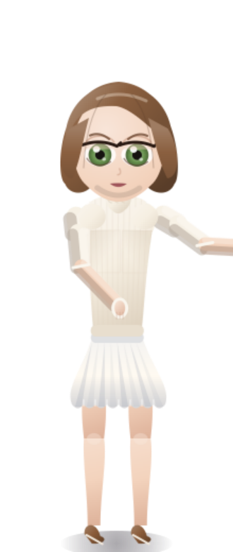
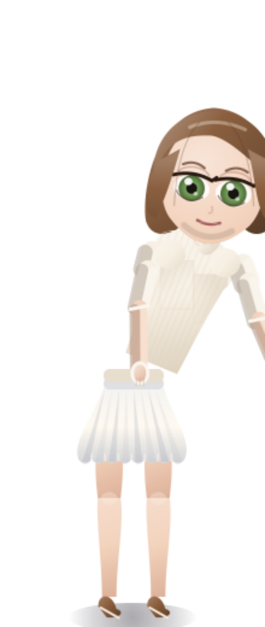
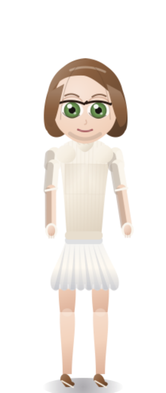
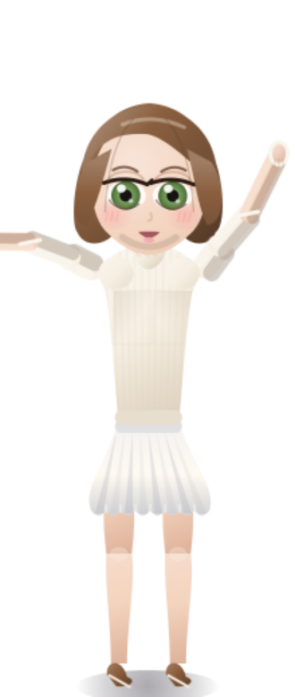
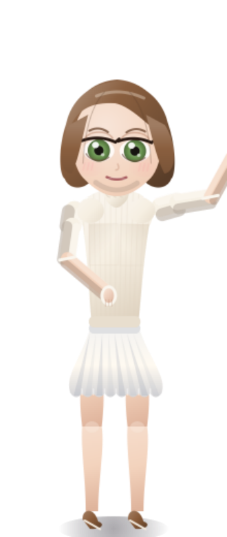
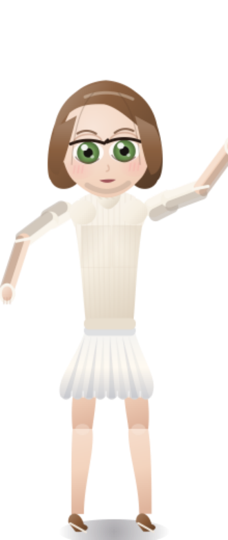
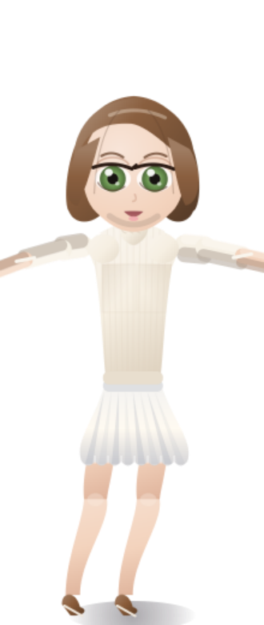
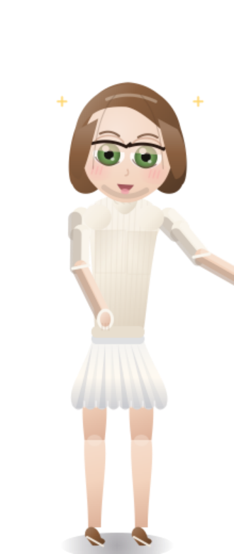
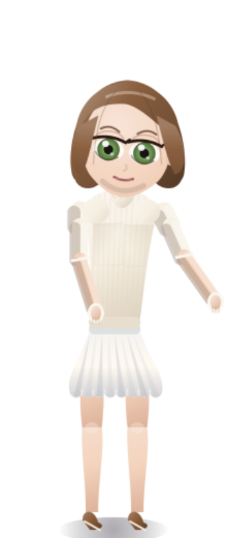
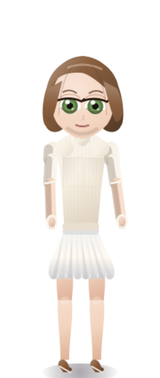
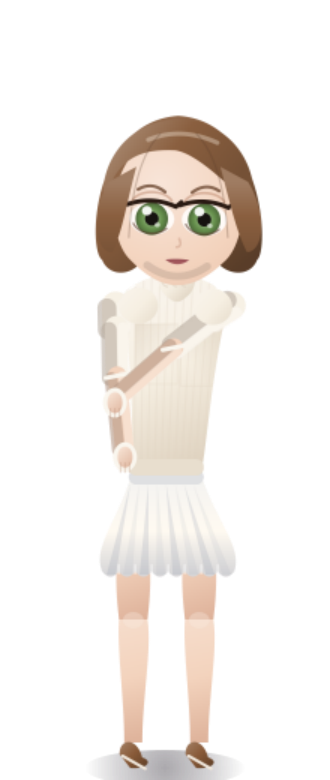
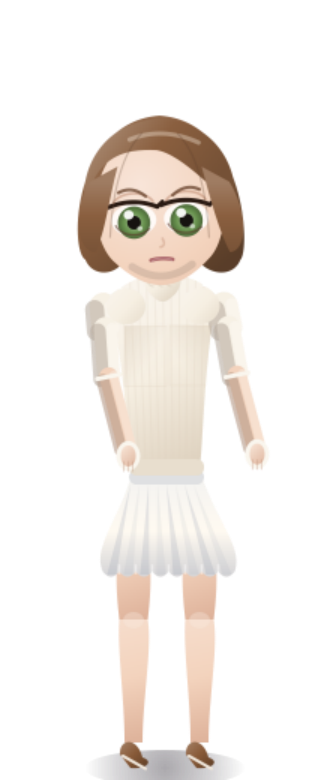
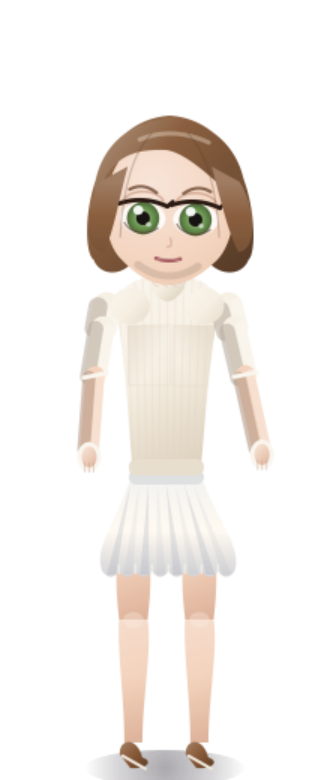
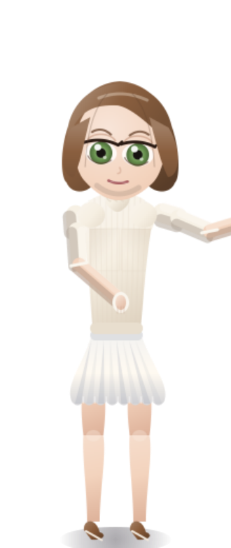
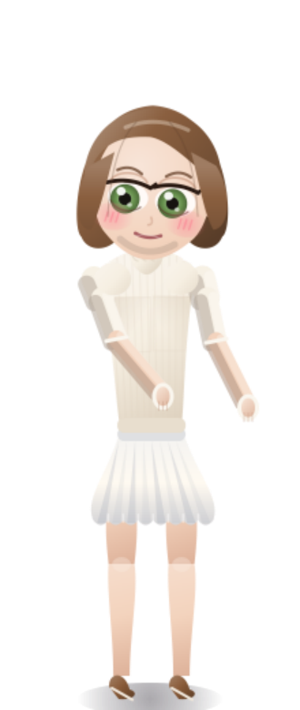
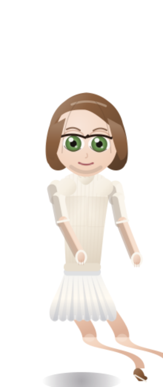
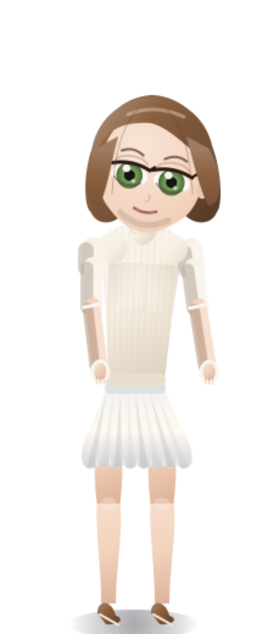
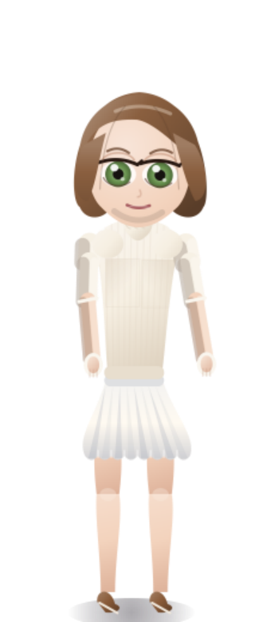
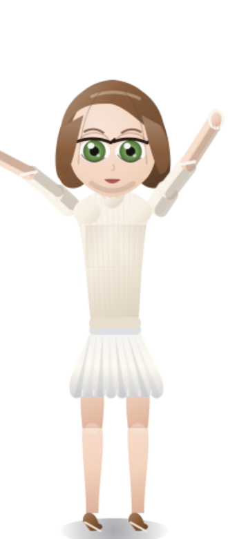
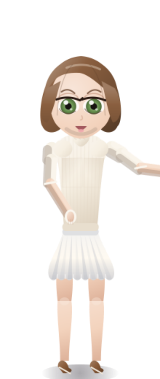
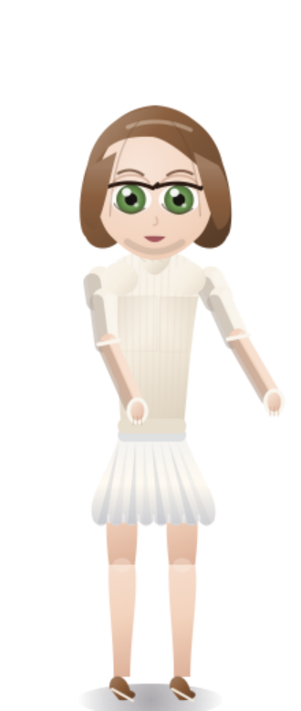
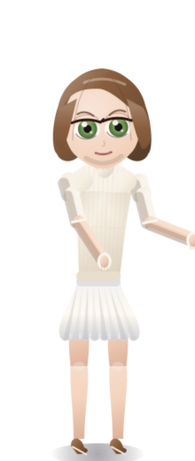
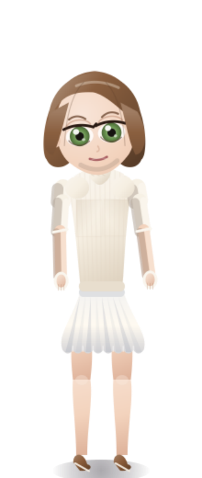
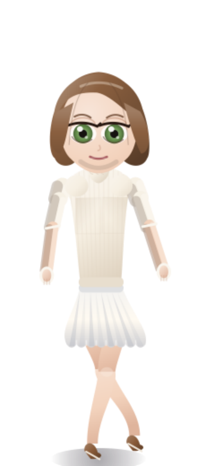
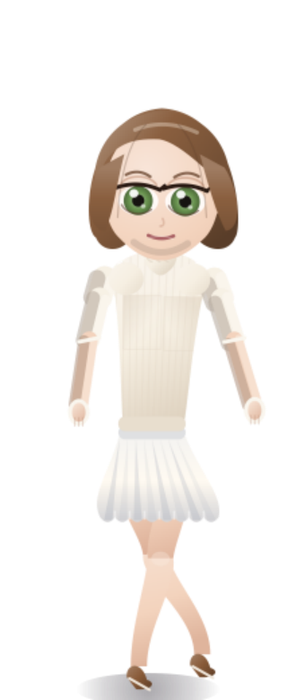
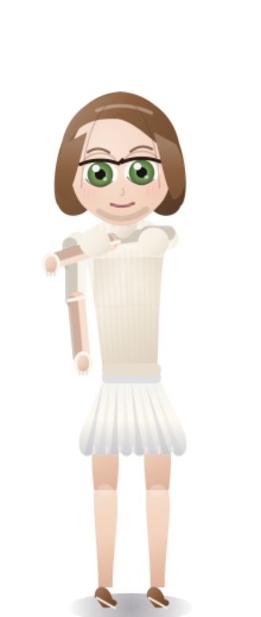